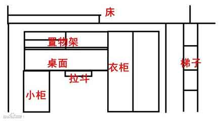

尽量少带东西，这里什么都有。日用品在学院内及学院周边都可以买到。
特别提醒：新生刚入校时，可能会有人员进入新生寝室向大家推销报纸、学习用品、日用品等，千万别买哦，这些东西都比平价高了很多很多。其中尤以英语报纸为甚，二十多块钱的东西卖到一百，而且绝大多数人以后是不会看的。
宿舍内个人的位置大致结构如下图。

下面这些，是学校会发的物品，其费用应该会标注在随录取通知书一起的信函中，如果想自备，不想要学校的，也可以退掉（大多数人还是会用学校的）： 厚被子、薄被子、枕头、枕巾、蚊帐、被蒙。
下面这些，是入学后可能需要的物品，其中大部分到学校再买就可以了： 盆、毛巾、牙刷、牙膏、洗发液、护发素、沐浴露或者肥皂、搓澡巾、洗面奶、润肤乳、防晒霜、化妆品、暖水瓶、水杯、洗衣皂及肥皂盒、拖鞋、蚊香、花露水、台灯、碗筷勺、洗洁精、针线包、镜子、衣架、粘钩、指甲钳、剪刀、水果刀、胶水、胶带、双面胶、插排、锁、绳子、雨伞、太阳伞、眼药水、相机、扇子、钱包、便利贴、垃圾桶等。
除了要带的日用品外，还有些证件也是要随报到一起带来的：身份证、录取通知书、高考准考证、一寸照片（10张）、二寸照片（5张）。
关于衣物的准备，请查看攻略页的“衣”。